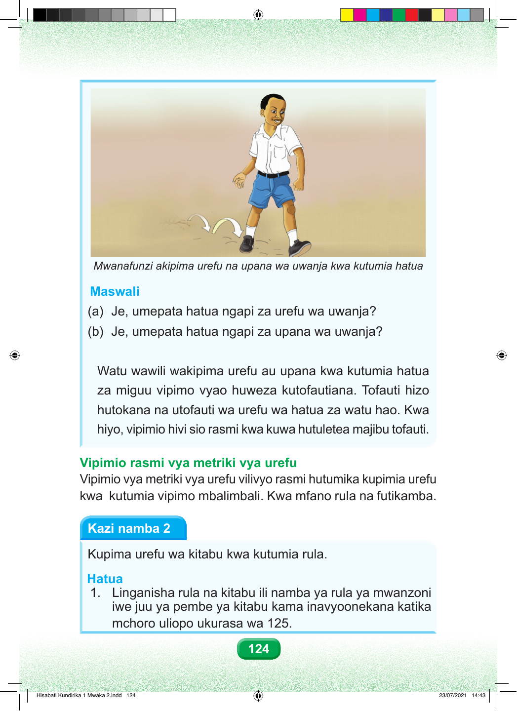

Mwanafunzi akipima urefu na upana wa uwanja kwa kutumia hatua Maswali (a) Je, umepata hatua ngapi za urefu wa uwanja? (b) Je, umepata hatua ngapi za upana wa uwanja? Watu wawili wakipima urefu au upana kwa kutumia hatua za miguu vipimo vyao huweza kutofautiana. Tofauti hizo hutokana na utofauti wa urefu wa hatua za watu hao. Kwa hiyo, vipimio hivi sio rasmi kwa kuwa hutuletea majibu tofauti. Vipimio rasmi vya metriki vya urefu Vipimio vya metriki vya urefu vilivyo rasmi hutumika kupimia urefu kwa kutumia vipimo mbalimbali. Kwa mfano rula na futikamba. Kazi namba 2 Kupima urefu wa kitabu kwa kutumia rula. Hatua 1. Linganisha rula na kitabu ili namba ya rula ya mwanzoni iwe juu ya pembe ya kitabu kama inavyoonekana katika mchoro uliopo ukurasa wa 125. 124 Hisabati Kundirika 1 Mwaka 2.indd 124 23/07/2021 14:43